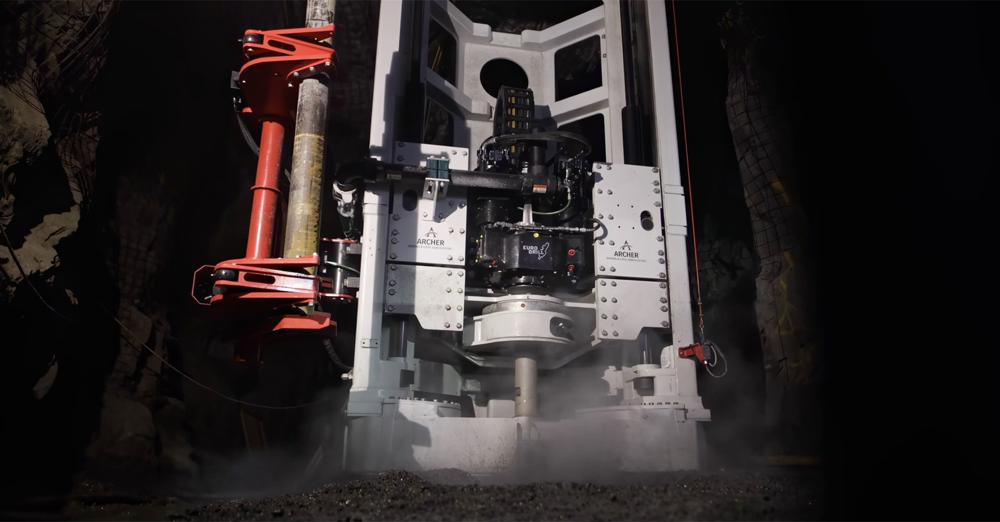
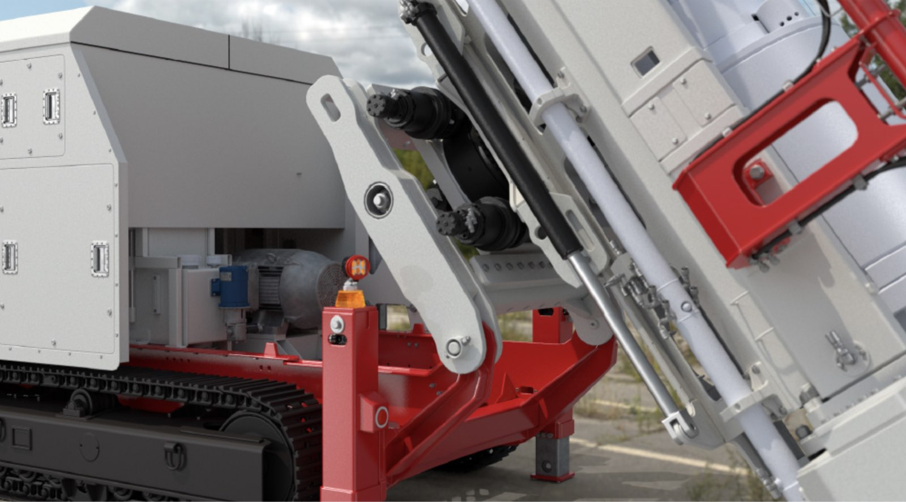
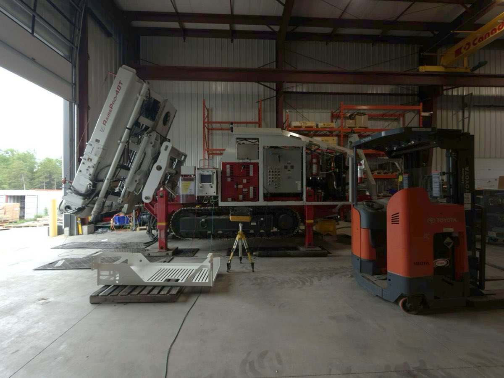

Industrial Automation
Automated breakout sequences and sensor-guided pipe handling for a tracked in-the-hole raise drill.

The machine
A track-mounted, in-the-hole raise drill that bores holes from 3.5 to 48 inches underground, operated by radio remote. Every rod change means breaking threaded joints apart, a repetitive and hazardous job when it's done by hand.
The goal was to make rod handling automatic, keeping the operator in control and informed at every step.
My contribution
Automated breakout
- Rebuilt the upper breakout sequence around rotary encoder feedback instead of timers, and made it a defined operating mode with its own interlocks and precondition checks.
- Designed and tuned the lower breakout sequence on the machine, including the edge cases where the pipe isn't secured.
- Operator messages on the radio remote show each step of the sequence and every fault state.
Sensor-guided pipe handling
- A detection sequence rotates the pipe until its wrench flats line up with the breakout jaw.
- Evaluated proximity, laser, retroreflective and ultrasonic sensors against dirt, water and different pipe materials, then settled on an analog ultrasonic control strategy.
- Tuned rotation speed and debounce on the machine, and recommended production sensors.
Engineering practice
- Put the CODESYS project under Git with feature branches, and documented both sequences with state-flow diagrams, interlock definitions and release notes.
- Traced an incorrect weight-on-bit reading to a calculation that could go validly negative under holdback pressure, rather than a sensor or comms fault.
Photos


Next project
Innovation in Mining Technology